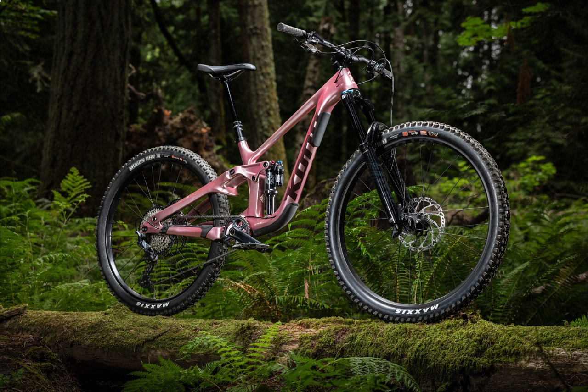

Kona Process-X CR
Celoodpružené enduro kolo Kona Process X CR zvládne vše. Díky 170 mm přednímu a 162 mm zadnímu odpružení, 12 rychlostnímu pohonu Shimano, teleskopické sedlovce a hydraulickým kotoučovým brzdám je Process X CR vysoce výkonné a úžasně všestranné MTB kolo, které tě nezklame ani na technických sjezdech a náročných trasách.
Detailní popis
Kona Process X CR je prémiové celoodpružené enduro kolo s karbonovým rámem, navržené pro agresivní sjezdy, technické traily i náročná freeride terény. Je to ideální volba pro jezdce, kteří chtějí jedno univerzální kolo, které zvládne dlouhé sjezdy i výjezdy bez kompromisů.
Lehký karbonový rám s 162 mm zadním zdvihem a Fox 38 vidlice s 170 mm zdvihem vpředu poskytuje jistotu a kontrolu v náročném terénu a zároveň nabízí dostatek pohodlí při dlouhých jízdách.
Pohon kola je 12-rychlostní s komponenty Shimano SLX/XT, které zaručují hladké a přesné řazení v každé situaci. Hydraulické kotoučové brzdy poskytují silné a konzistentní brzdění při prudkých sjezdech. Sedlovka s možností teleskopického posuvu ti umožní okamžitě snížit sedlo při přechodu do agresivních sjezdů.
Díky progresivní geometrii a kvalitnímu odpružení je Process X CR připraven na dlouhé dne na traily, bike parky i freeride tratě a poskytuje skvělý kompromis mezi výkonem ve sjezdech a schopností šlapat vzhůru.